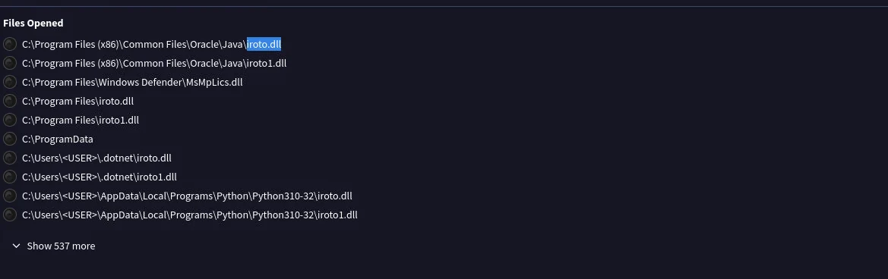
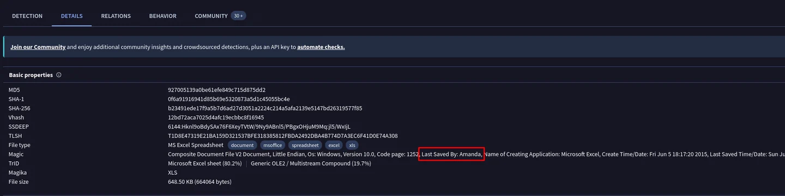
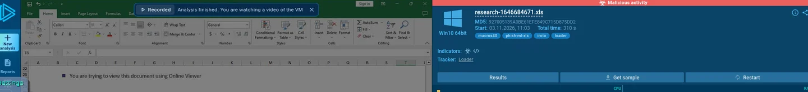
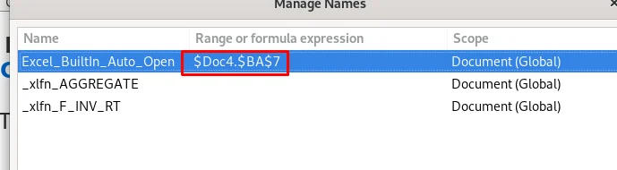

Excel 4.0 Macros
- Categoria
- Desafios
- Caso
- XLM-04
- Registro
- Análise estática
Resumo
Investigação de uma planilha suspeita em que a triagem inicial não encontrou macros VBA.
Passo a passo da investigação
Contexto do desafio
Um funcionário recebeu por e-mail um documento suspeito anexado. Durante a análise do fluxo de e-mails, a equipe identificou um arquivo do Office suspeito. Os analistas de nível 1 verificaram o arquivo com diferentes ferramentas, mas não encontraram macros VBA. Como o formato ainda parecia suspeito, encaminharam o documento para uma análise mais detalhada. Lembrete: pesquisar sobre a vulnerabilidade antes de começar a análise.
Arquivo
- Arquivo:
/root/Desktop/ChallengeFiles/11f44531fb088d31307d87b01e8eabff.rar
Perguntas e anotações
DLL registrada
Pergunta: Qual é o nome da DLL registrada? Anotação: Enviei o arquivo ao VirusTotal e consultei a seção Behavior.

Usuário que fez a última alteração
Pergunta: Qual é o nome de usuário da pessoa que fez a última alteração no documento malicioso? Anotação: Consultei a seção Details do VirusTotal, onde encontrei a resposta.

Ferramenta LOLBAS utilizada
Pergunta: Houve uso de um utilitário legítimo no comportamento da amostra? Anotação: Consultei o relatório de execução no ambiente de análise.

Indícios de execução automática
Pergunta: Que indícios a estrutura da planilha apresentava? Resultado: o arquivo continha uma referência de abertura automática.
Inspeção das células
A estrutura da planilha foi examinada para correlacionar células e componentes da macro.

Interação com processos
Pergunta: A análise indicava interação com processos do sistema? Anotação: Pesquisei a lista de funções de macros XLM do Excel 4.0 para encontrar a resposta.
Lições aprendidas
- Macros Excel 4.0 (XLM) não aparecem como VBA e podem escapar de análises que só procuram VBA.
- AUTO_OPEN é o equivalente do auto open do VBA.
Exercício simulado. Algumas capturas foram recortadas ou tiveram campos ocultados.